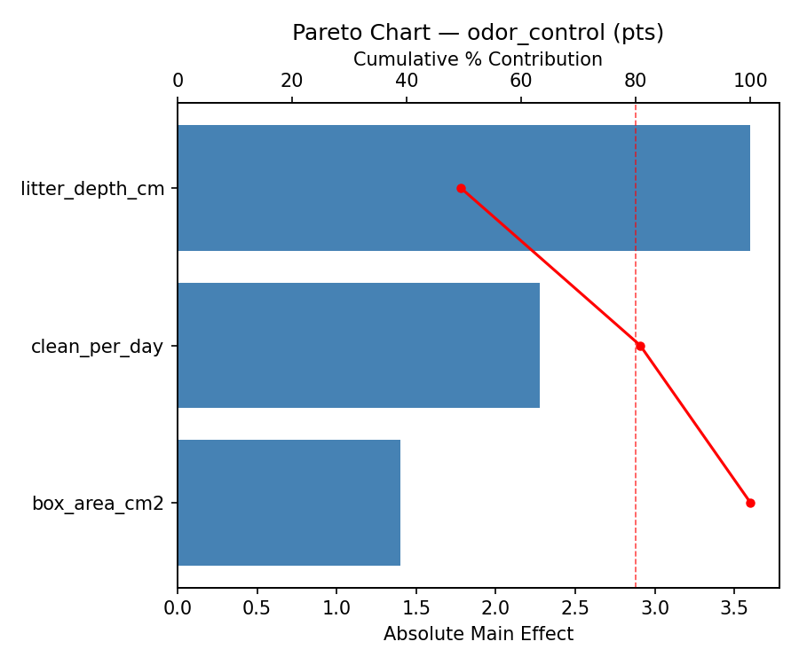
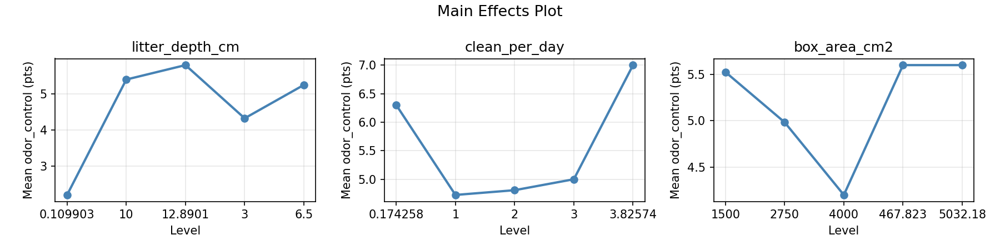
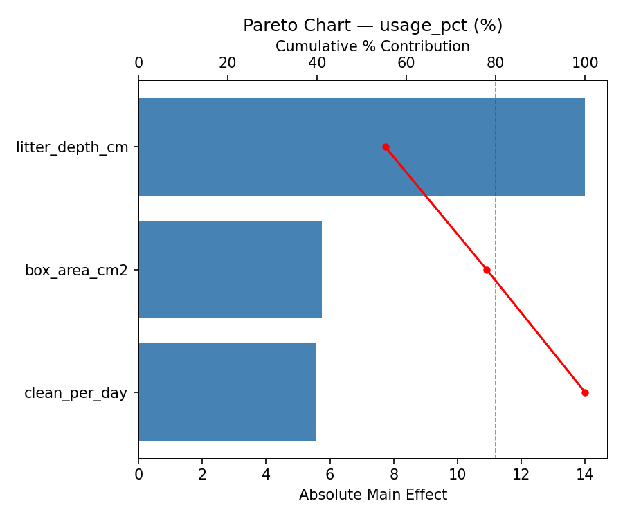
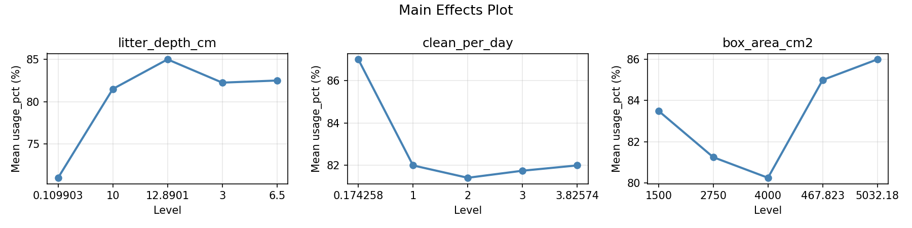
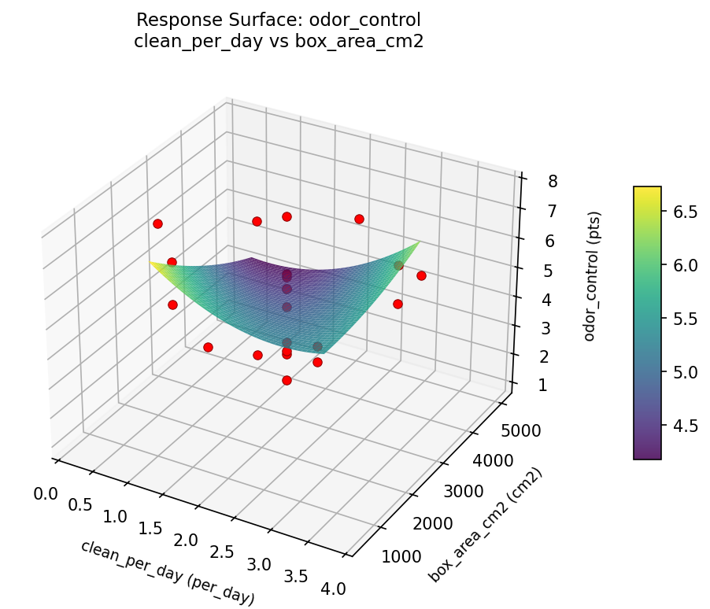
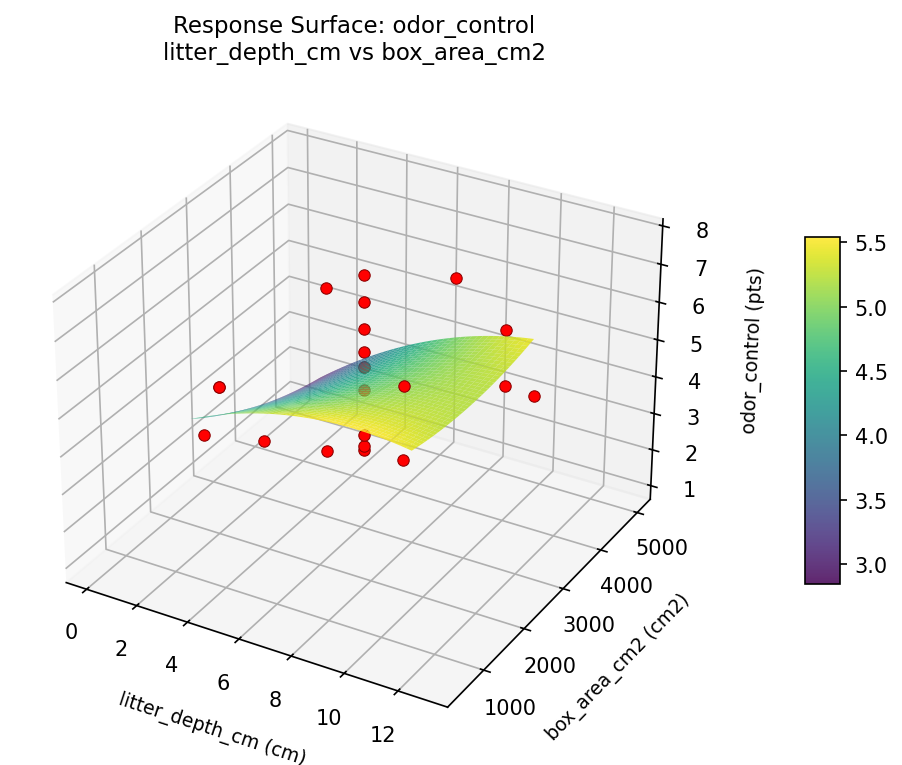
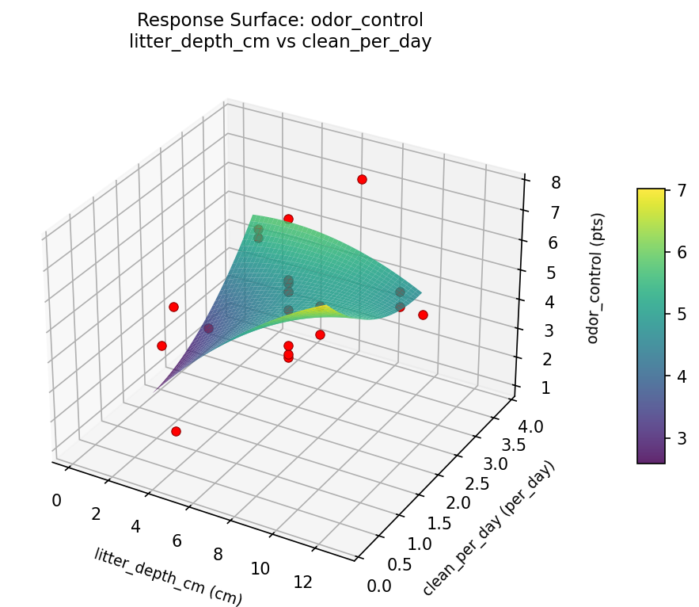
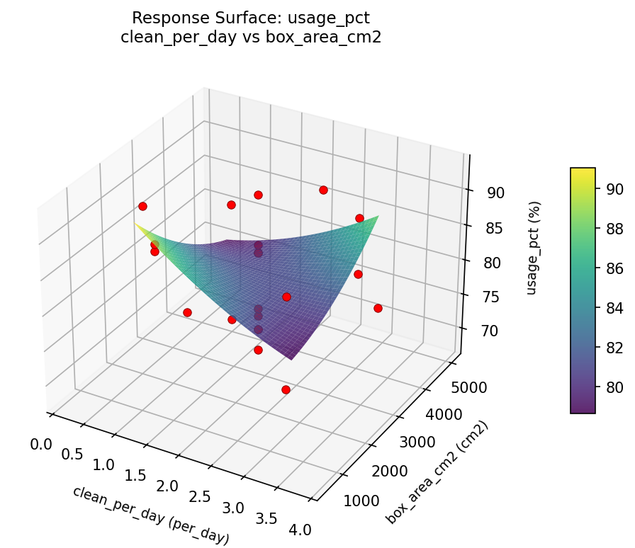
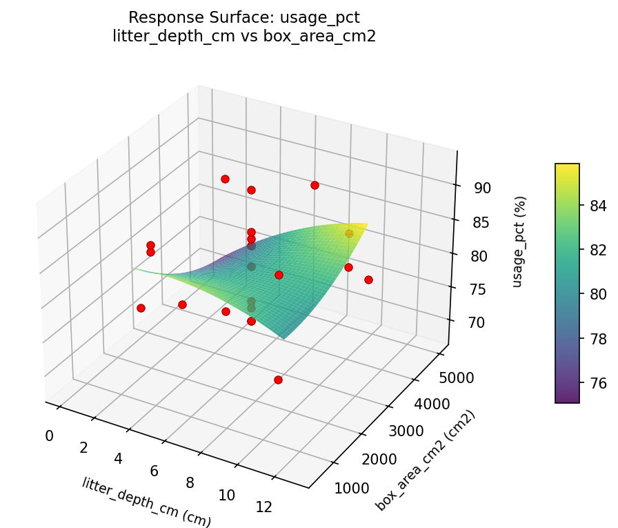
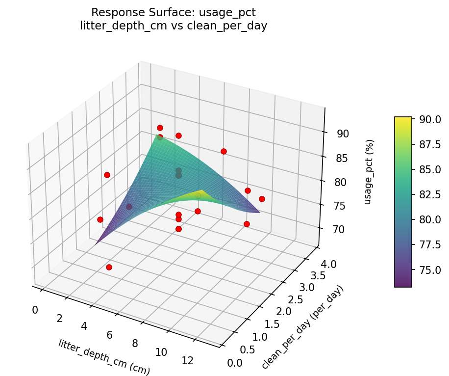

Summary
This experiment investigates cat litter box management. Central composite design to minimize odor and maximize cat usage by tuning litter depth, cleaning frequency, and box size.
The design varies 3 factors: litter depth cm (cm), ranging from 3 to 10, clean per day (per_day), ranging from 1 to 3, and box area cm2 (cm2), ranging from 1500 to 4000. The goal is to optimize 2 responses: odor control (pts) (maximize) and usage pct (%) (maximize). Fixed conditions held constant across all runs include litter type = clumping_clay, cats = 2.
A Central Composite Design (CCD) was selected to fit a full quadratic response surface model, including curvature and interaction effects. With 3 factors this produces 22 runs including center points and axial (star) points that extend beyond the factorial range.
Quadratic response surface models were fitted to capture potential curvature and factor interactions. The RSM contour plots below visualize how pairs of factors jointly affect each response.
Key Findings
For odor control, the most influential factors were box area cm2 (36.7%), litter depth cm (36.4%), clean per day (27.0%). The best observed value was 7.7 (at litter depth cm = 3, clean per day = 3, box area cm2 = 1500).
For usage pct, the most influential factors were box area cm2 (38.7%), litter depth cm (35.0%), clean per day (26.3%). The best observed value was 93.0 (at litter depth cm = 3, clean per day = 3, box area cm2 = 1500).
Recommended Next Steps
- Run confirmation experiments at the predicted optimal settings to validate the model.
- Consider whether any fixed factors should be varied in a future study.
Experimental Setup
Factors
| Factor | Low | High | Unit |
|---|
litter_depth_cm | 3 | 10 | cm |
clean_per_day | 1 | 3 | per_day |
box_area_cm2 | 1500 | 4000 | cm2 |
Fixed: litter_type = clumping_clay, cats = 2
Responses
| Response | Direction | Unit |
|---|
odor_control | ↑ maximize | pts |
usage_pct | ↑ maximize | % |
Configuration
{
"metadata": {
"name": "Cat Litter Box Management",
"description": "Central composite design to minimize odor and maximize cat usage by tuning litter depth, cleaning frequency, and box size"
},
"factors": [
{
"name": "litter_depth_cm",
"levels": [
"3",
"10"
],
"type": "continuous",
"unit": "cm"
},
{
"name": "clean_per_day",
"levels": [
"1",
"3"
],
"type": "continuous",
"unit": "per_day"
},
{
"name": "box_area_cm2",
"levels": [
"1500",
"4000"
],
"type": "continuous",
"unit": "cm2"
}
],
"fixed_factors": {
"litter_type": "clumping_clay",
"cats": "2"
},
"responses": [
{
"name": "odor_control",
"optimize": "maximize",
"unit": "pts"
},
{
"name": "usage_pct",
"optimize": "maximize",
"unit": "%"
}
],
"settings": {
"operation": "central_composite",
"test_script": "use_cases/168_cat_litter_box/sim.sh"
}
}
Experimental Matrix
The Central Composite Design produces 22 runs. Each row is one experiment with specific factor settings.
| Run | litter_depth_cm | clean_per_day | box_area_cm2 |
|---|
| 1 | 6.5 | 2 | 2750 |
| 2 | 10 | 1 | 4000 |
| 3 | 3 | 3 | 1500 |
| 4 | 6.5 | 3.82574 | 2750 |
| 5 | 6.5 | 2 | 2750 |
| 6 | 0.109903 | 2 | 2750 |
| 7 | 6.5 | 2 | 467.823 |
| 8 | 6.5 | 2 | 2750 |
| 9 | 10 | 3 | 1500 |
| 10 | 12.8901 | 2 | 2750 |
| 11 | 6.5 | 2 | 2750 |
| 12 | 6.5 | 0.174258 | 2750 |
| 13 | 6.5 | 2 | 2750 |
| 14 | 3 | 1 | 4000 |
| 15 | 6.5 | 2 | 2750 |
| 16 | 10 | 1 | 1500 |
| 17 | 6.5 | 2 | 5032.18 |
| 18 | 10 | 3 | 4000 |
| 19 | 6.5 | 2 | 2750 |
| 20 | 3 | 1 | 1500 |
| 21 | 3 | 3 | 4000 |
| 22 | 6.5 | 2 | 2750 |
Step-by-Step Workflow
1
Preview the design
$ python doe.py info --config use_cases/168_cat_litter_box/config.json
2
Generate the runner script
$ python doe.py generate --config use_cases/168_cat_litter_box/config.json \
--output use_cases/168_cat_litter_box/results/run.sh --seed 42
3
Execute the experiments
$ bash use_cases/168_cat_litter_box/results/run.sh
4
Analyze results
$ python doe.py analyze --config use_cases/168_cat_litter_box/config.json
5
Get optimization recommendations
$ python doe.py optimize --config use_cases/168_cat_litter_box/config.json
6
Multi-objective optimization
With 2 competing responses, use --multi to find the best compromise via Derringer–Suich desirability.
$ python doe.py optimize --config use_cases/168_cat_litter_box/config.json --multi
7
Generate the HTML report
$ python doe.py report --config use_cases/168_cat_litter_box/config.json \
--output use_cases/168_cat_litter_box/results/report.html
Features Exercised
| Feature | Value |
|---|
| Design type | central_composite |
| Factor types | continuous (all 3) |
| Arg style | double-dash |
| Responses | 2 (odor_control ↑, usage_pct ↑) |
| Total runs | 22 |
Analysis Results
Generated from actual experiment runs using the DOE Helper Tool.
Response: odor_control
Top factors: box_area_cm2 (36.7%), litter_depth_cm (36.4%), clean_per_day (27.0%).
Pareto Chart

Main Effects Plot

Response: usage_pct
Top factors: box_area_cm2 (38.7%), litter_depth_cm (35.0%), clean_per_day (26.3%).
Pareto Chart

Main Effects Plot

Response Surface Plots
3D surfaces fitted with quadratic RSM. Red dots are observed data points.
odor control clean per day vs box area cm2

odor control litter depth cm vs box area cm2

odor control litter depth cm vs clean per day

usage pct clean per day vs box area cm2

usage pct litter depth cm vs box area cm2

usage pct litter depth cm vs clean per day

Multi-Objective Optimization
When responses compete, Derringer–Suich desirability finds the best compromise.
Each response is scaled to a 0–1 desirability, then combined via a weighted geometric mean.
Overall Desirability
D = 0.9545
Per-Response Desirability
| Response | Weight | Desirability | Predicted | Dir |
|---|
odor_control |
1.5 |
|
7.70 0.9545 7.70 pts |
↑ |
usage_pct |
1.0 |
|
93.00 0.9545 93.00 % |
↑ |
Recommended Settings
| Factor | Value |
|---|
litter_depth_cm | 6.5 cm |
clean_per_day | 2 per_day |
box_area_cm2 | 2750 cm2 |
Source: from observed run #18
Trade-off Summary
Sacrifice = how much worse than single-objective best.
| Response | Predicted | Best Observed | Sacrifice |
|---|
usage_pct | 93.00 | 93.00 | +0.00 |
Top 3 Runs by Desirability
| Run | D | Factor Settings |
|---|
| #4 | 0.7989 | litter_depth_cm=0.109903, clean_per_day=2, box_area_cm2=2750 |
| #17 | 0.7515 | litter_depth_cm=6.5, clean_per_day=2, box_area_cm2=2750 |
Model Quality
| Response | R² | Type |
|---|
usage_pct | 0.3888 | linear |
Full Multi-Objective Output
============================================================
MULTI-OBJECTIVE OPTIMIZATION
Method: Derringer-Suich Desirability Function
============================================================
Overall desirability: D = 0.9545
Response Weight Desirability Predicted Direction
---------------------------------------------------------------------
odor_control 1.5 0.9545 7.70 pts ↑
usage_pct 1.0 0.9545 93.00 % ↑
Recommended settings:
litter_depth_cm = 6.5 cm
clean_per_day = 2 per_day
box_area_cm2 = 2750 cm2
(from observed run #18)
Trade-off summary:
odor_control: 7.70 (best observed: 7.70, sacrifice: +0.00)
usage_pct: 93.00 (best observed: 93.00, sacrifice: +0.00)
Model quality:
odor_control: R² = 0.6632 (quadratic)
usage_pct: R² = 0.3888 (linear)
Top 3 observed runs by overall desirability:
1. Run #18 (D=0.9545): litter_depth_cm=6.5, clean_per_day=2, box_area_cm2=2750
2. Run #4 (D=0.7989): litter_depth_cm=0.109903, clean_per_day=2, box_area_cm2=2750
3. Run #17 (D=0.7515): litter_depth_cm=6.5, clean_per_day=2, box_area_cm2=2750
Full Analysis Output
=== Main Effects: odor_control ===
Factor Effect Std Error % Contribution
--------------------------------------------------------------
box_area_cm2 3.1250 0.3350 36.7%
litter_depth_cm 3.1000 0.3350 36.4%
clean_per_day 2.3000 0.3350 27.0%
=== ANOVA Table: odor_control ===
Source DF SS MS F p-value
-----------------------------------------------------------------------------
litter_depth_cm 4 5.8045 1.4511 0.478 0.7515
clean_per_day 4 8.9395 2.2349 0.737 0.5899
box_area_cm2 4 8.7079 2.1770 0.717 0.6009
Lack of Fit 2 7.1576 3.5788 1.179 0.3619
Pure Error 7 21.2400 3.0343
Error 9 28.3976 3.0343
Total 21 51.8495 2.4690
=== Summary Statistics: odor_control ===
litter_depth_cm:
Level N Mean Std Min Max
------------------------------------------------------------
0.109903 1 6.3000 0.0000 6.3000 6.3000
10 4 5.4250 1.8822 3.1000 7.7000
12.8901 1 3.2000 0.0000 3.2000 3.2000
3 4 4.8250 0.9570 3.5000 5.7000
6.5 12 4.9500 1.7234 1.1000 7.0000
clean_per_day:
Level N Mean Std Min Max
------------------------------------------------------------
0.174258 1 5.8000 0.0000 5.8000 5.8000
1 4 5.8500 1.2767 4.8000 7.7000
2 12 4.7000 1.7326 1.1000 7.0000
3 4 4.4000 1.2910 3.1000 5.7000
3.82574 1 6.7000 0.0000 6.7000 6.7000
box_area_cm2:
Level N Mean Std Min Max
------------------------------------------------------------
1500 4 5.3250 1.7557 3.5000 7.7000
2750 12 5.1667 1.6339 1.1000 7.0000
4000 4 4.9250 1.2285 3.1000 5.7000
467.823 1 2.2000 0.0000 2.2000 2.2000
5032.18 1 4.7000 0.0000 4.7000 4.7000
=== Main Effects: usage_pct ===
Factor Effect Std Error % Contribution
--------------------------------------------------------------
box_area_cm2 12.1667 1.4162 38.7%
litter_depth_cm 11.0000 1.4162 35.0%
clean_per_day 8.2500 1.4162 26.3%
=== ANOVA Table: usage_pct ===
Source DF SS MS F p-value
-----------------------------------------------------------------------------
litter_depth_cm 4 105.9242 26.4811 0.623 0.6577
clean_per_day 4 90.9242 22.7311 0.535 0.7140
box_area_cm2 4 165.1742 41.2936 0.972 0.4687
Lack of Fit 2 267.0682 133.5341 3.142 0.1062
Pure Error 7 297.5000 42.5000
Error 9 564.5682 42.5000
Total 21 926.5909 44.1234
=== Summary Statistics: usage_pct ===
litter_depth_cm:
Level N Mean Std Min Max
------------------------------------------------------------
0.109903 1 87.0000 0.0000 87.0000 87.0000
10 4 84.2500 7.8049 74.0000 93.0000
12.8901 1 76.0000 0.0000 76.0000 76.0000
3 4 79.5000 6.9522 73.0000 86.0000
6.5 12 81.9167 6.6941 68.0000 88.0000
clean_per_day:
Level N Mean Std Min Max
------------------------------------------------------------
0.174258 1 85.0000 0.0000 85.0000 85.0000
1 4 84.0000 8.2462 73.0000 93.0000
2 12 81.0833 6.7347 68.0000 88.0000
3 4 79.7500 6.6521 74.0000 86.0000
3.82574 1 88.0000 0.0000 88.0000 88.0000
box_area_cm2:
Level N Mean Std Min Max
------------------------------------------------------------
1500 4 81.2500 9.5350 73.0000 93.0000
2750 12 83.1667 5.9671 68.0000 88.0000
4000 4 82.5000 5.6862 74.0000 86.0000
467.823 1 71.0000 0.0000 71.0000 71.0000
5032.18 1 77.0000 0.0000 77.0000 77.0000
Optimization Recommendations
=== Optimization: odor_control ===
Direction: maximize
Best observed run: #18
litter_depth_cm = 3
clean_per_day = 3
box_area_cm2 = 1500
Value: 7.7
RSM Model (linear, R² = 0.0487, Adj R² = -0.1099):
Coefficients:
intercept +4.9955
litter_depth_cm -0.3100
clean_per_day -0.0011
box_area_cm2 -0.2757
RSM Model (quadratic, R² = 0.5222, Adj R² = 0.1638):
Coefficients:
intercept +5.0349
litter_depth_cm -0.3100
clean_per_day -0.0011
box_area_cm2 -0.2757
litter_depth_cm*clean_per_day -1.0750
litter_depth_cm*box_area_cm2 +0.9000
clean_per_day*box_area_cm2 +0.6750
litter_depth_cm^2 -0.1697
clean_per_day^2 -0.2597
box_area_cm2^2 +0.3703
Curvature analysis:
box_area_cm2 coef=+0.3703 convex (has a minimum)
clean_per_day coef=-0.2597 concave (has a maximum)
litter_depth_cm coef=-0.1697 concave (has a maximum)
Notable interactions:
litter_depth_cm*clean_per_day coef=-1.0750 (antagonistic)
litter_depth_cm*box_area_cm2 coef=+0.9000 (synergistic)
clean_per_day*box_area_cm2 coef=+0.6750 (synergistic)
Predicted optimum (from quadratic model, at observed points):
litter_depth_cm = 3
clean_per_day = 3
box_area_cm2 = 1500
Predicted value: 6.8603
Surface optimum (via L-BFGS-B, quadratic model):
litter_depth_cm = 3
clean_per_day = 2.76783
box_area_cm2 = 1500
Predicted value: 6.8743
Model quality: Moderate fit — use predictions directionally, not precisely.
Factor importance:
1. box_area_cm2 (effect: 2.9, contribution: 36.7%)
2. litter_depth_cm (effect: 2.6, contribution: 33.2%)
3. clean_per_day (effect: 2.4, contribution: 30.0%)
=== Optimization: usage_pct ===
Direction: maximize
Best observed run: #18
litter_depth_cm = 3
clean_per_day = 3
box_area_cm2 = 1500
Value: 93.0
RSM Model (linear, R² = 0.1610, Adj R² = 0.0211):
Coefficients:
intercept +81.8636
litter_depth_cm -2.0749
clean_per_day -0.1183
box_area_cm2 -2.4189
RSM Model (quadratic, R² = 0.5273, Adj R² = 0.1729):
Coefficients:
intercept +82.2584
litter_depth_cm -2.0749
clean_per_day -0.1183
box_area_cm2 -2.4189
litter_depth_cm*clean_per_day -2.7500
litter_depth_cm*box_area_cm2 +3.2500
clean_per_day*box_area_cm2 +4.7500
litter_depth_cm^2 -0.4974
clean_per_day^2 -0.4974
box_area_cm2^2 +0.4026
Curvature analysis:
litter_depth_cm coef=-0.4974 concave (has a maximum)
clean_per_day coef=-0.4974 concave (has a maximum)
box_area_cm2 coef=+0.4026 convex (has a minimum)
Notable interactions:
clean_per_day*box_area_cm2 coef=+4.7500 (synergistic)
litter_depth_cm*box_area_cm2 coef=+3.2500 (synergistic)
litter_depth_cm*clean_per_day coef=-2.7500 (antagonistic)
Predicted optimum (from quadratic model, at observed points):
litter_depth_cm = 3
clean_per_day = 1
box_area_cm2 = 1500
Predicted value: 91.5283
Surface optimum (via L-BFGS-B, quadratic model):
litter_depth_cm = 3
clean_per_day = 1
box_area_cm2 = 1500
Predicted value: 91.5283
Model quality: Moderate fit — use predictions directionally, not precisely.
Factor importance:
1. clean_per_day (effect: 13.0, contribution: 44.1%)
2. litter_depth_cm (effect: 9.0, contribution: 30.5%)
3. box_area_cm2 (effect: 7.5, contribution: 25.4%)